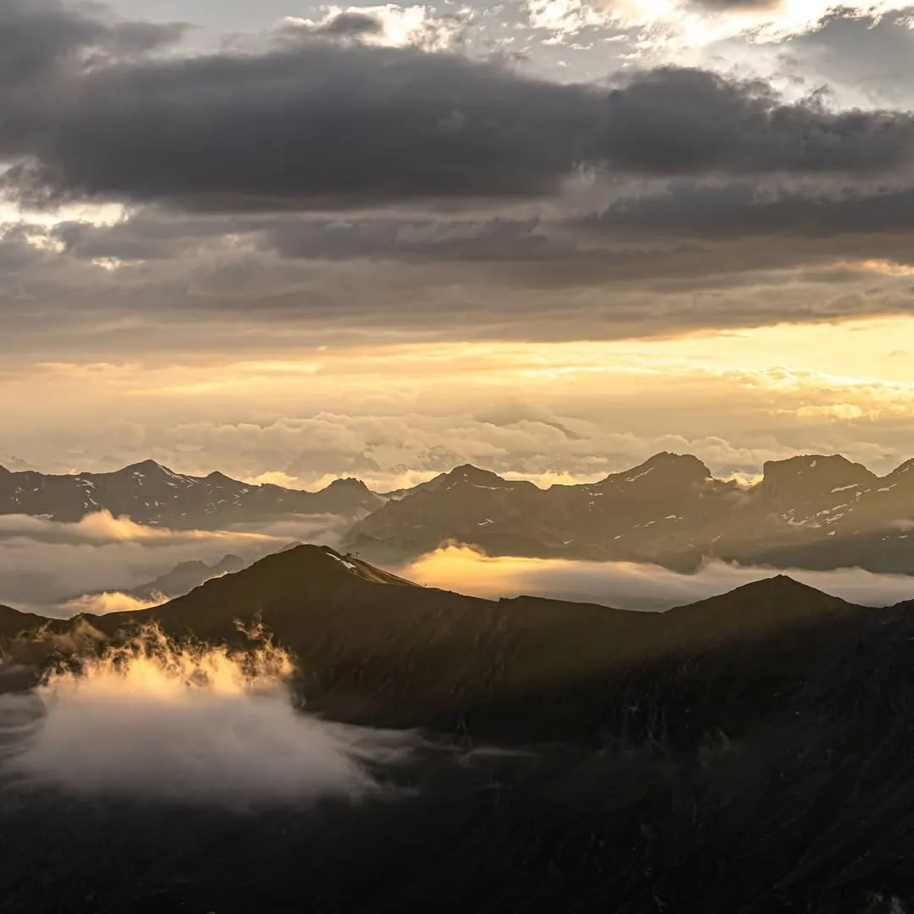

Photo · @sherpa__tenzinSUMMITS
A long hike to a quiet summit overlooking the Moiry Glacier. The kind of view you earn.
The summit looks straight onto the Moiry Glacier from the ridge above the cabane. Long approach, real elevation gain, but the perspective on the glacier is one you cannot get from the hut viewpoint.
Plan a full day or split it with a night at Cabane des Becs de Bosson. Solid hiking shoes, water, and check the weather. The ridge is exposed.